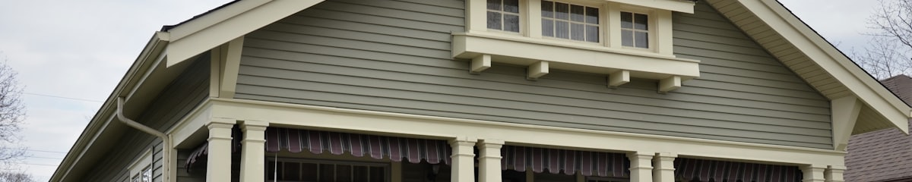
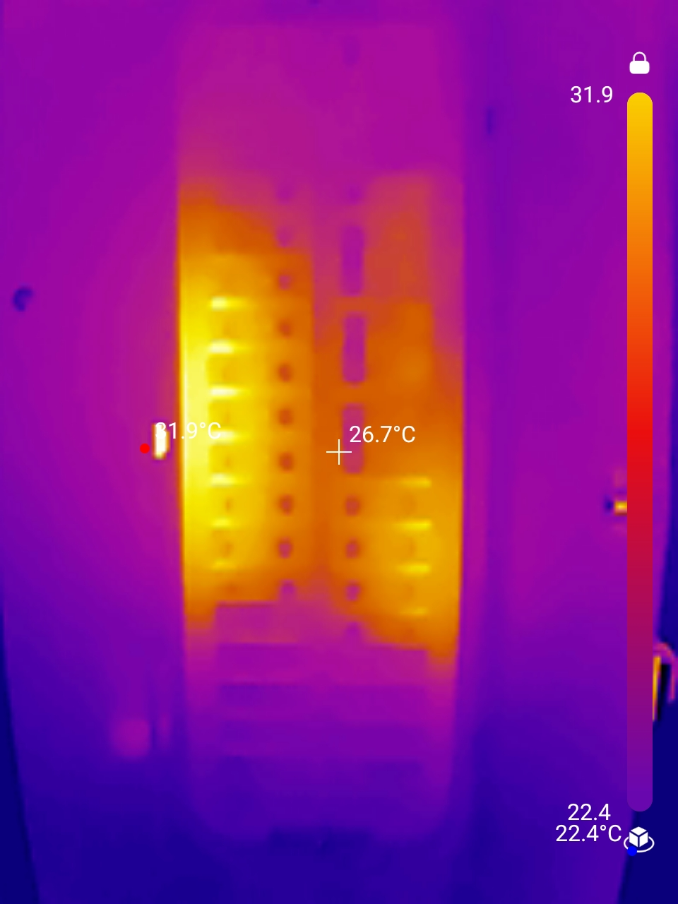
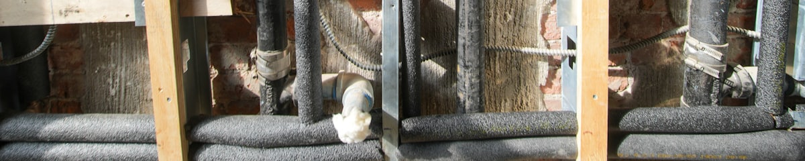

Home Inspection Services
From a full general inspection to the specialty add-ons that catch what a general inspection can't, all from one Ohio state-licensed inspector.
Jump to a service
General home inspection 1 service

General Home Inspection
What's included
Every general home inspection follows the same disciplined walkthrough, so nothing gets missed.
Structure & Exterior
- Foundation, framing, and visible structural elements
- Roof covering, flashing, gutters, and drainage
- Siding, windows, doors, decks, and grading around the home
Electrical
- Main panel, breakers, and visible wiring condition
- Outlets, switches, and GFCI/AFCI protection
- Fixtures and visible safety concerns
Plumbing
- Supply lines, drains, and visible leaks
- Water heater condition and operation
- Fixtures, faucets, and water pressure
HVAC
- Furnace and A/C operation and condition
- Ductwork and visible insulation
- Thermostat function
Interior
- Walls, ceilings, floors, and stairs
- Attic and basement/crawlspace
- Appliances included in the sale
Safety
- Smoke and carbon monoxide detectors
- Railings, stairs, and egress
- Other visible health & safety concerns

Thermal Imaging
- Included on every general home inspection, no extra charge
- Infrared camera flags hidden moisture, insulation gaps, and electrical hot spots
- Relevant images added directly to your report
Buying or selling a home 3 services
Limited & Investigative Inspections
A focused look at one specific concern
Not every visit needs a full top-to-bottom inspection. If you already have a specific worry (a stain on a ceiling, a crack in the foundation, a system that's acting up), a limited or investigative inspection zeroes in on that area (or a defined scope of your choosing) for a faster, more affordable answer.
- Scoped to the system or area you're concerned about
- Useful for pre-listing spot checks or second opinions
- Same clear digital report format, scaled to the scope
- The same full-system inspection a buyer's inspector would run
- Fix it, price it in, or disclose it on your terms, before offers
- Fewer renegotiations and a smoother path to closing
Pre-Listing Inspection
Find the surprises before your buyer does
Selling puts you on the buyer's timeline. Their inspector finds the problems, and you're negotiating from behind. A pre-listing inspection flips that. You learn what's wrong first, decide what's worth fixing, and price the home knowing exactly what's in it.
Pre-Listing Consultation
A walk-through before you spend a dollar on repairs
Lighter than a full pre-listing inspection. Boaz walks the property with you and talks through what he's seeing: what a buyer's inspector will likely flag, what's worth fixing before listing, and what isn't worth the money. Guidance on the spot, no formal report.
- Walk the home together, room by room
- A practical read on what's likely to get flagged
- Helps you spend repair money where it actually moves the sale
Investors & landlords 2 services
- Roof, structure and foundation, electrical, plumbing, and HVAC
- Faster and lower-cost than a full general inspection
- Built for rentals, flips, and portfolio purchases
Investor 5-Point Inspection
The five systems that decide the deal
For investors who need a fast read on the big-ticket items rather than a full report. It concentrates on the five systems carrying the most financial risk, so you can price a deal (or walk away) quickly.
This is a deliberately limited scope. If you want everything a general inspection covers, book that instead.
Multifamily Residential Inspection
Duplexes, triplexes, and fourplexes
Small multifamily buildings carry more of everything: more units, more mechanicals, more shared components that nobody's quite responsible for. Home State Inspections covers residential properties up to four units, inspecting each unit alongside the shared structure, roof, and systems.
- Each unit inspected, plus shared systems and common areas
- Duplex, triplex, and fourplex properties
- Reporting suited to owner-occupants and investors alike
Specialty add-ons 4 services
- Camera run through the main sewer lateral
- Flags root intrusion, bellies, cracks, and blockages
- Especially important for older homes and mature trees near the line
Sewer Scope Inspection
See what's really in the sewer line
The main sewer lateral is buried, out of sight, and one of the most expensive things to repair or replace, often $5,000–$25,000+. A sewer scope inspection runs a video camera through the line to check its condition before you close, not after.
- Visual inspection of moisture-prone areas (basement, attic, bathrooms)
- Moisture-meter readings on suspect surfaces
- Air and/or surface sampling available, sent to a third-party lab
Mold Inspection
Know before it becomes a bigger problem
Visible mold, musty odors, or a history of water intrusion are all reasons to take a closer look. A mold inspection combines a visual check of moisture-prone areas with optional lab sampling, so you have documented, third-party results, not just a guess.
- Safe, close-up imagery of steep or high roofs
- No walking on fragile or unsafe roof surfaces
- Aerial photos included in your report
Drone Roof Inspection
A closer look, without the risk
Some roofs are too steep, too high, or too fragile to safely walk. A drone gives a detailed, close-up view of the roof covering, flashing, and chimney from every angle, so nothing gets skipped just because it was hard to reach.
Contractor Work Verification
Confirm the work actually got done, and done right
Whether it's repairs promised during a home sale negotiation, work from a contractor project, or fixes from a prior inspection report, this service verifies the work was actually completed, and completed correctly, not just painted over or covered up.
- Verifies repairs from an inspection report or sale negotiation were completed
- Checks the quality of the workmanship and whether it was installed properly, not just that it was done
- Useful before final walkthrough, at closing, or after any contractor project
- Common examples: a new roof, siding, soffits and fascia, or a bathroom remodel
Commercial property 2 services
- Structure, roof, electrical, plumbing, and HVAC review
- Scoped to the property type: office, retail, multi-family, and more
- Clear digital report suited for lenders and partners
Commercial Inspection
Due diligence for commercial property
Buying or leasing a commercial property brings its own set of systems and risks. A commercial inspection applies the same disciplined, top-to-bottom approach as a residential inspection, scoped to the building type and your intended use.
- Roof covering, flashing, drainage, and penetrations
- Drone imagery where the roof is unsafe or impractical to walk
- Photo-documented condition report suited for buyers, owners, and lenders
- Scoped to the roof only, not a full commercial inspection
Limited Commercial Roof Inspection
A focused look at the most expensive component
On a commercial building the roof is usually the largest single deferred-maintenance risk on the property. This is a scoped inspection of the roof alone, useful for buyers, owners, and lenders who need a straight condition read without commissioning a full building inspection.
New construction 2 services
New Construction Inspection
A second set of eyes before you close
New doesn't mean flawless. A busy build moves fast, and the finish work is where things get missed. An independent inspection before closing (or before your builder's warranty runs out around the 11-month mark) catches problems while they're still the builder's responsibility to fix.
- Pre-closing walkthrough on newly built homes
- 11-month warranty inspections before builder coverage ends
- Same full-system review as a general inspection

- Framing, fasteners, and structural connections
- Rough electrical, plumbing, and HVAC runs
- Insulation, flashing, and moisture barriers before they're covered
Pre-Drywall Inspection
Catch it while the walls are still open
The best moment to inspect a new build is after framing, wiring, and plumbing are in but before the drywall goes up. Everything that will be sealed inside those walls for the next fifty years is still visible, and still cheap for the builder to fix. Pairs naturally with a pre-closing new construction inspection.
The Process
From booking to report
Book online or call
Pick a time that fits your closing timeline, often same-week.
On-site walkthrough
A full, hands-on inspection of the home's major systems, top to bottom.
Same-day digital report
A clear report with photos, followed by a call to walk through anything important.
Ready to schedule?
Same-week appointments available in most cases.